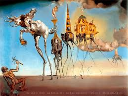

La monalisa

El Retrato de Lisa Gherardini, esposa de Francesco del Giocondo, más conocido como La Gioconda o La Mona Lisa, es una obra pictórica del polímata renacentista italiano Leonardo da Vinci. Fue adquirida por el rey Francisco I de Francia a comienzos del siglo XVI y desde entonces es propiedad del Estado francés.
renacimiento
La noche estrellada

La noche estrellada es un óleo sobre lienzo del pintor posimpresionista holandés Vincent van Gogh. Pintado en junio de 1889, representa la vista desde la ventana orientada al este de su habitación de asilo en Saint-Rémy-de-Provence, justo antes del amanecer, con la adición de un pueblo imaginario.
arte moderno
La tentación
En el cuadro se muestra a San Antonio Abad en un desierto, arrodillado y sosteniendo una cruz hecha con dos varitas para protegerse de las tentaciones que lo atacan, con el antiguo gesto del exorcismo. Estas son representadas por un caballo y una fila de elefantes, todos estos con sus patas alargadas de forma grotesca y cada uno cargando con una tentación. Exposición sobre Dalí en Londres. En primer término hay una escultura de un elefante de patas alargadas con una pirámide en el lomo, idéntico a uno de los que aparecen en el cuadro. Al fondo se encuentra el London Eye. San Antonio aparece representado como un mendigo, desnudo, con el pelo revuelto y apoyado sobre una piedra. Delante de él hay una calavera.
surrealismo